Section A (multiple choice). Questions 1 to 60 are multiple choice with every correct answer carrying 1 mark and every wrong answer carrying mark. [1]
A load is to be moved using a wheelbarrow. The total mass of the load and wheelbarrow is 60 kg. The magnitude of gravitational acceleration is .
What is the work done if the handle is raised by 50 cm?
Quesito 1
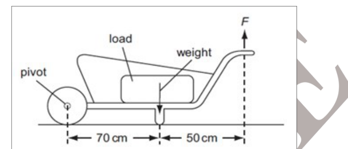
- (a) 35.0 J
- (b) 17.5 J
- (c) 175 J
- (d) 350 J
Topic: Conservation of Energy Metodi: Conservation of Energy Competenze: Physical Reasoning Objects: Lever, Block Fonte: Testo (PDF) — p.1
Sezione A (scelta multipla). Le domande da 1 a 60 sono di scelta multipla, con ogni risposta corretta con un marchio e ogni risposta sbagliata con un marchio . [1]
Un carico deve essere spostato con un carrozzino. La massa totale del carico e del carro è di 60 kg. La magnitudo dell’accelerazione gravitazionale è .
Che lavoro si fa se la maniglia è sollevata di 50 cm?
Quesito 1
- (a) 35.0 J
- (b) 17.5 J
- (c) 175 J
- (d) 350 J
Topic: Conservation of Energy Metodi: Conservation of Energy Competenze: Physical Reasoning Objects: Lever, Block Fonte: Testo (PDF) — p.1
The electrons, identified by quantum numbers and can be placed in order of increasing energy, from the lowest to highest as
-
i. &
-
ii. &
-
iii. &
-
iv. &
-
(a) iv < ii < iii < i
-
(b) ii < iv < i < iii
-
(c) i < iii < ii < iv
-
(d) iii < i < iv < ii
Topic: Modern-Quantum Physics Metodi: Bohr Model & Quantization Competenze: Physical Reasoning Objects: Electron Fonte: Testo (PDF) — p.1
Gli elettroni, identificati dai numeri quantistici e possono essere posizionati in ordine di aumento di energia, dal più basso al più alto come
-
i. &
-
ii. &
-
III. &
-
iv. &
-
a) iv < ii < iii < i
-
b) ii < iv < i < iii
-
c) i < iii < ii < iv
-
d) iii < i < iv < ii
Topic: Modern-Quantum Physics Metodi: Bohr Model & Quantization Competenze: Physical Reasoning Objects: Electron Fonte: Testo (PDF) — p.1
Which of the following is an example of secondary succession?
- (a) Vegetation developing on a bare rock.
- (b) Vegetation developing following forest fire.
- (c) Fungus growing on a banana peel.
- (d) Conversion of pond into a crop field by humans.
Topic: Biology Metodi: Physical Modeling Competenze: Physical Reasoning Objects: — Fonte: Testo (PDF) — p.1
Quale di queste è un esempio di successione secondaria?
- a) vegetazione che si sviluppa su una roccia nuda.
- b) La vegetazione che si sviluppa a seguito di incendi forestali.
- (c) Funghi che crescono su una pelliccia di banana.
- (d) Trasformazione di stagni in un campo di coltivazione da parte dell’uomo.
Topic: Biology Metodi: Physical Modeling Competenze: Physical Reasoning Objects: — Fonte: Testo (PDF) — p.1
In the process of electrostatic induction…
- (a) a conductor is rubbed with an insulator.
- (b) a charge is produced by friction.
- (c) negative and positive charges are separated.
- (d) electrons are ‘sprayed’ on the object.
Topic: Electrostatics Metodi: Physical Modeling Competenze: Physical Reasoning Objects: — Fonte: Testo (PDF) — p.2
Nel processo di induzione elettrostatica…
- a) un conduttore viene strofinato con un isolante.
- b) una carica è prodotta da attrito.
- c) le spese negative e le spese positive sono separate.
- (d) gli elettroni vengono “spruzzati” sull’oggetto.
Topic: Electrostatics Metodi: Physical Modeling Competenze: Physical Reasoning Objects: — Fonte: Testo (PDF) — p.2
A white salt is readily soluble in water and gives colorless solution with pH of about 9. The salt would be…
- (a) NHNO
- (b) CHCOONa
- (c) CHCOONH
- (d) CaCO
Topic: Chemistry Metodi: Physical Modeling Competenze: Physical Reasoning Objects: — Fonte: Testo (PDF) — p.2
Un sale bianco è facilmente solubile in acqua e produce una soluzione incolore con un pH di circa 9. Il sale sarebbe…
- a) NHNO
- b) CHCOONa
- (c) CHCOONH
- (d) CaCO
Topic: Chemistry Metodi: Physical Modeling Competenze: Physical Reasoning Objects: — Fonte: Testo (PDF) — p.2
Twenty five micrograms () of DNA amounting five micromole () was cut using a specific restriction enzyme into two pieces. Subsequently, when it was analyzed on an agarose gel it showed two bands of 200 bp and 800 bp. If the length of the original DNA was 1000 bp, which of the following options best quantifies each band?
Quesito 6
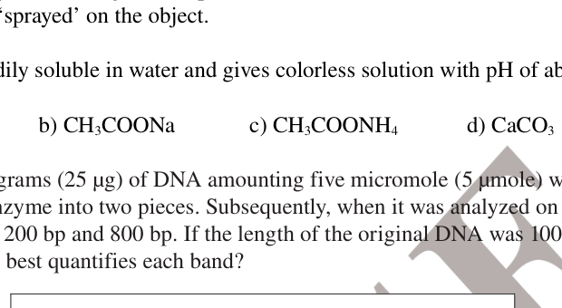
| 200 bp band () | 200 bp band () | 800 bp band () | 800 bp band () | |
|---|---|---|---|---|
| (a) | 5 | 5 | 5 | 20 |
| (b) | 1 | 5 | 4 | 20 |
| (c) | 5 | 25 | 5 | 25 |
| (d) | 1 | 25 | 1 | 25 |
Topic: Biology, Mathematics Metodi: Physical Modeling Competenze: Mathematical Modeling Objects: — Fonte: Testo (PDF) — p.2
Venticinque microgrammi () di DNA pari a cinque micromoli () sono stati tagliati in due pezzi con un specifico enzima di restrizione. Successivamente, quando è stato analizzato su un gel di agarosio ha mostrato due bande di 200 bp e 800 bp. Se la lunghezza del DNA originale fosse di 1000 bp, quale delle seguenti opzioni quantifica meglio ogni banda?
Quesito 6
| 200 bp band () | 200 bp band () | 800 bp band () | 800 bp band () | |
|---|---|---|---|---|
| (a) | 5 | 5 | 5 | 20 |
| (b) | 1 | 5 | 4 | 20 |
| (c) | 5 | 25 | 5 | 25 |
| (d) | 1 | 25 | 1 | 25 |
Topic: Biology, Mathematics Metodi: Physical Modeling Competenze: Mathematical Modeling Objects: — Fonte: Testo (PDF) — p.2
A spherical convex lens of diameter 0.1 m and power 3 dioptre is used to produce the image of a candle flame kept at 0.4 m from the lens in two different methods as shown in the fig. (front view)
Method A: 5 cm diameter of the lens is covered at the centre with dark paper and the periphery of the lens is clear. Method B: 5 cm at the centre of the lens is clear and the periphery is covered with dark paper.
While the distance of the flame (object) is kept same, what difference you see in the image formation?
Quesito 7
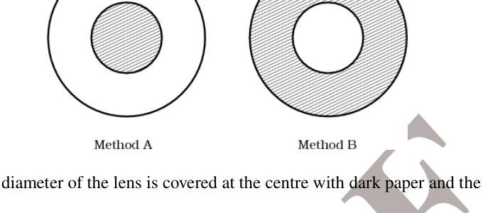
- (a) Method A produces no image and B produces an image
- (b) Method A produces an image and B produces no image
- (c) The image distance in both the methods is the same
- (d) Image due to A appears at a slightly different distance than due to B.
Topic: Geometric Optics Metodi: Thin Lens & Mirror Equation, Ray Tracing Competenze: Physical Reasoning Objects: Lens Fonte: Testo (PDF) — p.3
Una lente convexa sferica di diametro 0,1 m e di potenza 3 dioptre viene utilizzata per produrre l’immagine di una fiamma di candela tenuta a 0,4 m dalla lente in due metodi diversi come mostrato nel fico. (visto di fronte)
**Metoda A: ** 5 cm di diametro della lente è coperta al centro con carta scura e la periferia della lente è trasparente. **Metoda B: ** 5 cm al centro della lente è trasparente e la periferia è coperta di carta scura.
Mentre la distanza della fiamma (oggetto) è mantenuta la stessa, quale differenza vedi nella formazione dell’immagine?
Quesito 7
- (a) Il metodo A non produce immagini e il metodo B produce immagini
- (b) Il metodo A produce un’immagine e il metodo B non produce alcuna immagine
- (c) La distanza dell’immagine in entrambi i metodi è uguale
- (d) L’immagine dovuta a A appare a una distanza leggermente diversa da quella dovuta a B.
Topic: Geometric Optics Metodi: Thin Lens & Mirror Equation, Ray Tracing Competenze: Physical Reasoning Objects: Lens Fonte: Testo (PDF) — p.3
When pressure is applied to equilibrium system,
which of the following will happen?
- (a) More ice will be formed
- (b) Water will evaporate
- (c) More water will be formed
- (d) There will be no change.
Topic: Chemistry Metodi: Physical Modeling Competenze: Physical Reasoning Objects: — Fonte: Testo (PDF) — p.3
Quando si applica pressione al sistema di equilibrio,
quale di queste cose accadrà?
- (a) Si formera’ piu’ ghiaccio
- (b) L’ acqua evaporerà
- (c) Si formera’ piu’ acqua
- (d) Non ci saranno modifiche.
Topic: Chemistry Metodi: Physical Modeling Competenze: Physical Reasoning Objects: — Fonte: Testo (PDF) — p.3
Students of botany class expressed that their class is very boring. Next day Smita madam brought a few botanical samples. She asked the class to group the plants according to some criteria. They classified the plants and tabulated their observations as in the table below. Looking at this information, she asked them to find out the correct set belonging to Pteridophyta & Algae respectively.
| Criteria | I | II | III | IV | V |
|---|---|---|---|---|---|
| Seed production | Not seen | Not seen | Seen | Seen | Not seen |
| Vascular tissues | Absent | Present | Present | Present | Absent |
| Flowers | Absent | Absent | Absent | Present | Absent |
| Cones | Absent | Present | Present | Absent | Absent |
| Tissue differentiation | Absent | Present | Present | Present | Absent |
| Habit | Amphibious | Terrestrial | Terrestrial | Terrestrial | Aquatic |
- (a) II & V
- (b) II & I
- (c) III & V
- (d) II & III
Topic: Biology Metodi: Physical Modeling Competenze: Physical Reasoning Objects: — Fonte: Testo (PDF) — p.3
Gli studenti della classe di botanica hanno espresso che la loro classe è molto noiosa. Il giorno dopo la signora Smita portò alcuni campioni botanici. Chiese alla classe di raggruppare le piante secondo alcuni criteri. Essi classificarono le piante e classificarono le loro osservazioni come nella tabella seguente. Guardando queste informazioni, le ha chiesto di scoprire il set corretto appartenente rispettivamente a Pteridophyta e Alge.
I criteri # I # II # III # IV # V
|---|---|---|---|---|---| ♬ Produzione di semi ♬ Non visto ♬ Non visto ♬ Non visto ♬ Non visto ♬ ♬ tessuti vascolari ♬ Absentante ♬ Presente ♬ Presente ♬ Absentante
Fiori # Absentanti # Absentanti # Presente # Absentanti
♬ Cones ♬ Assente Presente ♬ Presente ♬ Assente ♬ Assente ♬ ♬ differenziazione tissutale ♬ assenza ♬ presente ♬ presente ♬ assenza
Abitudine # Amfibi # Terrestri # Terrestri # Acquati
- (a) II & V
- (b) II & I
- c) III & V
- d) II e III
Topic: Biology Metodi: Physical Modeling Competenze: Physical Reasoning Objects: — Fonte: Testo (PDF) — p.3
A direct current (dc) motor is connected to a battery by means of two leads. The motor moves for slightly less than half the cycle and comes to halt. Which of the following components is missing?
- (a) one of the brushes
- (b) commutator
- (c) slip ring
- (d) one of the two magnets
Topic: Electromagnetism Metodi: Physical Modeling Competenze: Physical Reasoning Objects: Battery, Magnet Fonte: Testo (PDF) — p.4
Un motore a corrente continua (DC) è collegato a una batteria tramite due fili. Il motore si muove per poco meno della metà del ciclo e si ferma. Quale delle seguenti componenti manca?
- a) uno dei pennelli
- b) commutatore
- (c) anello di scivolamento
- d) uno dei due magneti
Topic: Electromagnetism Metodi: Physical Modeling Competenze: Physical Reasoning Objects: Battery, Magnet Fonte: Testo (PDF) — p.4
Sumit evacuated a cylinder and filled in 4 g of gas A at temperature . Pressure was found to be 1 atm. His friend Vineet, filled another 8 g of gas B in the cylinder at the same temperature. The final pressure was found to be 1.5 atm. The ratio of molecular masses of A and B (assuming ideal gas behaviour) is
- (a) 1 : 1
- (b) 1 : 2
- (c) 1 : 3
- (d) 1 : 4
Topic: Kinetic Theory Metodi: Ideal Gas Law Competenze: Mathematical Modeling Objects: Gas, Cylinder Fonte: Testo (PDF) — p.4
Sumit ha evacuato un cilindro e ha riempito 4 g di gas A a temperatura . La pressione è stata riscontrata a 1 atm. Il suo amico Vineet ha riempito altri 8 g di gas B nel cilindro alla stessa temperatura. La pressione finale è stata di 1,5 atm. Il rapporto di massa molecolare di A e B (presumendo il comportamento ideale del gas) è
- (a) 1 : 1
- (b) 1 : 2
- (c) 1 : 3
- (d) 1 : 4
Topic: Kinetic Theory Metodi: Ideal Gas Law Competenze: Mathematical Modeling Objects: Gas, Cylinder Fonte: Testo (PDF) — p.4
Chromosomes in metaphase get arranged at the equatorial plate (see Fig. 1). When these cells are treated with colchicine, cell division is arrested and the cells never enter anaphase. If we were to compare a colchicine treated cell at metaphase and an untreated cell in the same phase, we notice that chromosomes are more dispersed and do not arrange themselves on the equatorial plate in the treated cells (see Fig 2.).
Using this information, which of the following will be affected by colchicine?
Quesito 12
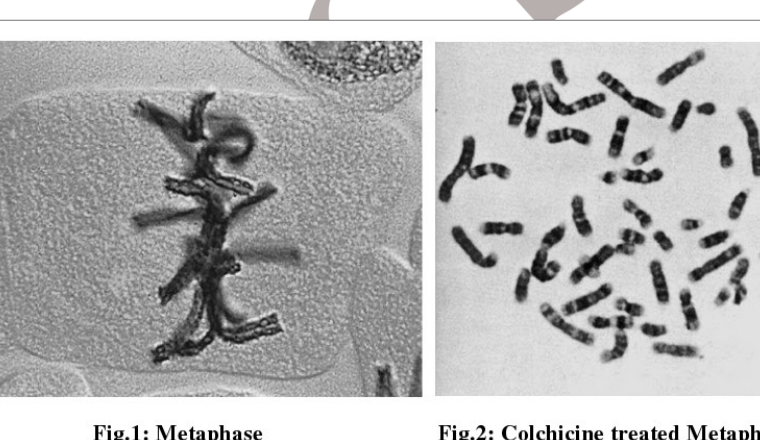
- (a) Centromere
- (b) Spindle fiber
- (c) Centriole
- (d) Arms of chromosomes
Topic: Biology Metodi: Physical Modeling Competenze: Physical Reasoning Objects: — Fonte: Testo (PDF) — p.4
I cromosomi in metafase sono disposti alla piastra equatoriale (vedi Figura 1). 1). Quando queste cellule vengono trattate con colchicina, la divisione cellulare viene arrestata e le cellule non entrano mai in anafase. Se si confrontasse una cellula trattata con colchicina in metfase e una cellula non trattata nella stessa fase, si nota che i cromosomi sono più dispersi e non si organizzano sulla piastra equatoriale nelle cellule trattate (vedere figura 2).
Usando queste informazioni, quale dei seguenti sarà influenzato dalla colchicina?
Quesito 12
- a) Centromere
- b) Fibre di spindolo
- c) Centriolo
- d) Armi cromosomici
Topic: Biology Metodi: Physical Modeling Competenze: Physical Reasoning Objects: — Fonte: Testo (PDF) — p.4
A student connects two lamps in the circuit shown. The emf of the two batteries is different.
Quesito 13
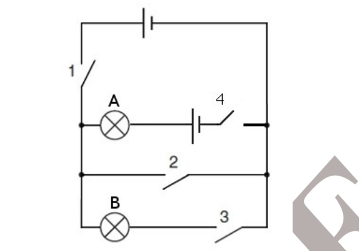
Which of the following statements are correct?
-
i. When keys 1, 2, 3 and 4 are closed, bulbs A and B will both glow
-
ii. When key 2 and 4 are closed bulb A will glow
-
iii. When 1 and 4 are closed, bulb A will glow
-
iv. When 2, 3 and 4 are closed, both A and B will glow
-
(a) only ii
-
(b) only iv
-
(c) i, ii and iv
-
(d) ii and iii
Topic: Circuits Metodi: Kirchhoff’s Laws Competenze: Diagrammatic Reasoning Objects: Battery, Wire Fonte: Testo (PDF) — p.5
Uno studente collega due lampade nel circuito mostrato. L’emf delle due batterie è diverso.
Quesito 13
Quali delle seguenti affermazioni sono corrette?
-
i. Quando le chiavi 1, 2, 3 e 4 sono chiuse, le lampadine A e B accendono entrambe
-
ii. Quando le chiavi 2 e 4 sono chiuse l’ampolla A si accenderà
-
III. Quando 1 e 4 sono chiusi, l’ampolla A accenderà
-
iv. Quando 2, 3 e 4 sono chiusi, A e B accendono
-
a) solo ii
-
b) solo iv
-
i, ii e iv
-
d) ii e iii
Topic: Circuits Metodi: Kirchhoff’s Laws Competenze: Diagrammatic Reasoning Objects: Battery, Wire Fonte: Testo (PDF) — p.5
A person is stuck in Antarctica in a ship wreck. He doesn’t have any drinking water available. He finds an ethylene (CH=CH) cylinder containing 4.2 g of ethylene. He decides to burn this ethylene to melt 1 kg of ice at . When a mole of ethylene is combusted it releases 340 kcal of energy. Assuming, no heat is lost to the environment, the amount of water available for drinking is…
- (a) 1 litre
- (b) 575 ml
- (c) 900 ml
- (d) It is not sufficient to melt the ice
Topic: Thermodynamics Metodi: First Law of Thermodynamics Competenze: Mathematical Modeling Objects: Cylinder Fonte: Testo (PDF) — p.5
Una persona è bloccata in Antartide in un naufragio. Non ha acqua potabile a disposizione. Trova un cilindro di etileno (CH=CH) contenente 4,2 g di etileno. Decide di bruciare questo etileno per sciogliere 1 kg di ghiaccio a . Quando un mole di etileno viene bruciato rilascia 340 kcal di energia. Supponendo che non si perda calore nell’ambiente, la quantità di acqua disponibile per il bere è…
- a) 1 litro
- (b) 575 ml
- (c) 900 ml
- d) Non è sufficiente sciogliere il ghiaccio
Topic: Thermodynamics Metodi: First Law of Thermodynamics Competenze: Mathematical Modeling Objects: Cylinder Fonte: Testo (PDF) — p.5
A girl has undergone a surgery for removal of gall bladder. While being discharged from the hospital, which of the following advise would you give her, being a doctor? She should…
- (a) take food less in fats
- (b) have a diet with less proteins
- (c) take less sugary fruits
- (d) take less quantity of liquids
Topic: Biology Metodi: Physical Modeling Competenze: Physical Reasoning Objects: — Fonte: Testo (PDF) — p.5
Una ragazza ha subito un intervento chirurgico per rimuovere la vescica biliare. Mentre verrebbe rilasciata dall’ospedale, quale dei seguenti consigli le darebbe, essendo un medico? Dovrebbe…
- (a) mangiare meno grassi
- (b) avere una dieta con meno proteine
- (c) consumare meno frutta zuccherata
- d) assumere meno liquidi
Topic: Biology Metodi: Physical Modeling Competenze: Physical Reasoning Objects: — Fonte: Testo (PDF) — p.5
A is a tank filled to its 75% with water, B is a weighing balance and C is a stone hung from a stand. If fig. 1 is correct, what do you expect to be the position of needle in fig. 2?
Quesito 16
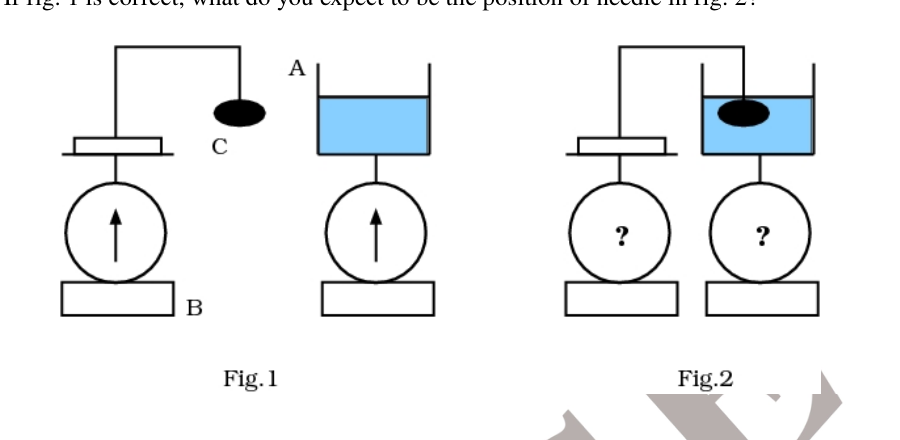
Topic: Fluid Mechanics Metodi: Physical Modeling Competenze: Diagrammatic Reasoning Objects: Container Fonte: Testo (PDF) — p.6
A è un serbatoio pieno al 75% di acqua, B è un bilanciatore e C è una pietra appesa da un supporto. Se fig. 1 è corretto, che cosa si aspetta che sia la posizione dell’ago in fichi. 2?
Quesito 16
Topic: Fluid Mechanics Metodi: Physical Modeling Competenze: Diagrammatic Reasoning Objects: Container Fonte: Testo (PDF) — p.6
Haemophilia and colourblindness are the disorders caused by X chromosome linked recessive gene. A woman has one X chromosome having gene for haemophilia and colourblindness. The other X chromosome has wild allele for both the characters. She marries a man having phenotype normal for both the traits. Which of the following statement is most likely for the progeny?
- (a) All daughters haemophilic and colourblind.
- (b) 50% haemophilic sons and 50% colourblind sons.
- (c) 50% haemophilic colourblind sons and 50% normal sons.
- (d) 25% haemophilic daughters and 75% colourblind sons
Topic: Biology Metodi: Physical Modeling Competenze: Physical Reasoning Objects: — Fonte: Testo (PDF) — p.6
L’emofilia e l’occultità dei colori sono i disturbi causati dal gene recessivo legato al cromosoma X. Una donna ha un cromosoma X con il gene per l’emofilia e la cecità dei colori. L’altro cromosoma X ha un allele selvaggio per entrambi i caratteri. Si sposa con un uomo con un fenotipo normale per entrambi i tratti. Quale delle seguenti affermazioni è più probabile per la progenie?
- a) Tutte le figlie emofilose e cieche ai colori.
- b) figli emofilli del 50% e figli ciechi al colore del 50%.
- c) 50% dei figli emofili e 50% dei figli normali.
- d) Figlia emofilose del 25% e figli ciechi del colore del 75%
Topic: Biology Metodi: Physical Modeling Competenze: Physical Reasoning Objects: — Fonte: Testo (PDF) — p.6
Liquid state of He is due to
- (a) dipole-dipole interaction
- (b) ion-dipole interaction
- (c) dipole-induce dipole interaction
- (d) dispersion forces
Topic: Chemistry Metodi: Physical Modeling Competenze: Physical Reasoning Objects: — Fonte: Testo (PDF) — p.6
Lo stato liquido di lui è dovuto a
- a) interazione dipolio-dipolio
- (b) interazione di ioni e dipoli
- (c) interazione di dipole-induzione di dipole
- d) forze di dispersione
Topic: Chemistry Metodi: Physical Modeling Competenze: Physical Reasoning Objects: — Fonte: Testo (PDF) — p.6
A transistor based radio receiver set (effective resistance of the order of 18 ohms) operates on a 9 V (dc) battery. If this battery is replaced by a dc power supply with rating 9 V, 500 A then
- (a) receiver will work normally
- (b) receiver will give distorted output
- (c) receiver will not work
- (d) power supply will get over heated
Topic: Circuits Metodi: Physical Modeling Competenze: Physical Reasoning Objects: Battery, Resistor Fonte: Testo (PDF) — p.7
Un set di ricevitori radio basato su transistor (resistenza effettiva dell’ordine di 18 ohm) funziona su una batteria da 9 V (dc). Se questa batteria viene sostituita da un alimentatore a corrente continua di 9 V, 500 A,
- (a) il ricevitore funzionerà normalmente
- b) il ricevitore fornisce un’uscita distorta
- (c) il ricevitore non funzionerà
- d) l’alimentazione elettrica si riscalderà
Topic: Circuits Metodi: Physical Modeling Competenze: Physical Reasoning Objects: Battery, Resistor Fonte: Testo (PDF) — p.7
Daily changes in the concentration of which hormone are represented by the graph.
Quesito 20
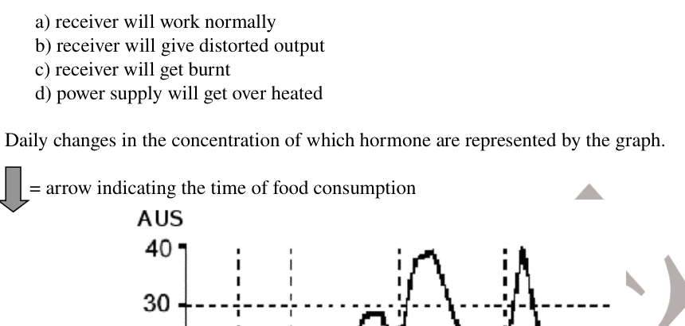
- (a) Thyroxine
- (b) Glucagon
- (c) Insulin
- (d) Cortisol
Topic: Biology Metodi: Physical Modeling Competenze: Diagrammatic Reasoning Objects: — Fonte: Testo (PDF) — p.7
Cambiamenti giornalieri nella concentrazione di cui sono rappresentati gli ormoni.
Quesito 20
- a) Tiroxina
- b) Glucagono
- (c) Insulina
- (d) Cortisolo
Topic: Biology Metodi: Physical Modeling Competenze: Diagrammatic Reasoning Objects: — Fonte: Testo (PDF) — p.7
Sulphur exhibits two allotropic forms which are interconvertible. These two allotropes of sulphur are rhombic and monoclinic sulphur. When both of them are heated in excess of oxygen, rhombic sulphur releases 297.04 kJ whereas monoclinic sulphur releases 300.193 kJ of heat. Which of the following statements is true?
- (a) The heat of transformation of rhombic to monoclinic sulphur is kJ. Rhombic and monoclinic both form SO and SO on oxidation.
- (b) The heat of transformation of rhombic to monoclinic sulphur is kJ. Rhombic and monoclinic, both form SO on oxidation.
- (c) The heat of transformation of rhombic to monoclinic sulphur is kJ. Rhombic and monoclinic, both form SO and SO on oxidation.
- (d) The heat of transformation of rhombic to monoclinic sulphur is kJ. Rhombic and monoclinic, both form SO on oxidation.
Topic: Thermodynamics, Chemistry Metodi: First Law of Thermodynamics Competenze: Mathematical Modeling Objects: — Fonte: Testo (PDF) — p.7
Il zolfo presenta due forme allotrope che sono interconvertibili. Questi due allotropi del zolfo sono zolfo rombico e solfo monoclinico. Quando entrambi vengono riscaldati in eccesso di ossigeno, il zolfo rombico rilascia 297,04 kJ mentre il zolfo monoclinico rilascia 300,193 kJ di calore. Quale delle seguenti affermazioni è vera?
- a) Il calore di trasformazione del zolfo rombico in solforo monoclinico è kJ. Sia a livello romobico che monoclinico, la forma di SO e SO si forma all’ ossidazione.
- b) Il calore di trasformazione del zolfo rombico in solforo monoclinico è kJ. Rombico e monoclinico, entrambi formano SO all’ ossidazione.
- (c) Il calore di trasformazione del zolfo rombico in solforo monoclinico è kJ. Rombico e monoclinico, entrambi formano SO e SO all’ ossidazione.
- (d) Il calore di trasformazione del zolfo rombico in solforo monoclinico è kJ. Rombico e monoclinico, entrambi formano SO all’ ossidazione.
Topic: Thermodynamics, Chemistry Metodi: First Law of Thermodynamics Competenze: Mathematical Modeling Objects: — Fonte: Testo (PDF) — p.7
A vibrator is generating a wave on the surface of water. An object x is floating on the surface. Which of the following graphs, of the floating object is/are correct?
Quesito 22
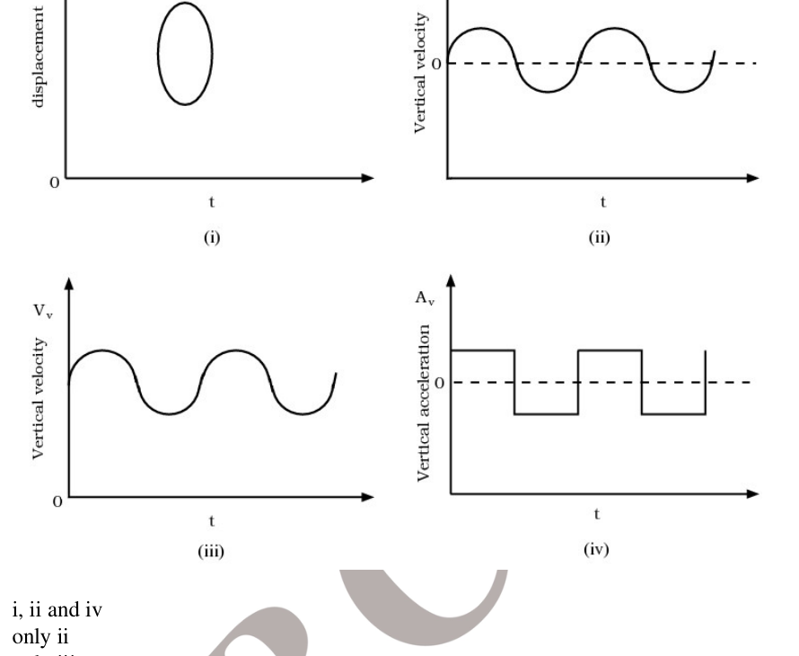
- (a) i, ii and iv
- (b) only ii
- (c) only iii
- (d) ii and iii
Topic: Oscillations & Waves Metodi: Physical Modeling Competenze: Diagrammatic Reasoning Objects: — Fonte: Testo (PDF) — p.8
Un vibratore sta generando un’onda sulla superficie dell’acqua. Un oggetto x galleggia sulla superficie. Quale dei seguenti grafici dell’oggetto galleggiante è corretto?
Quesito 22
- a) i, ii e iv
- b) solo ii
- c) solo iii
- d) ii e iii
Topic: Oscillations & Waves Metodi: Physical Modeling Competenze: Diagrammatic Reasoning Objects: — Fonte: Testo (PDF) — p.8
Which one is not an acid salt?
- (a) NaHPO
- (b) NaHPO
- (c) NaHPO
- (d) NaPO
Topic: Chemistry Metodi: Physical Modeling Competenze: Physical Reasoning Objects: — Fonte: Testo (PDF) — p.8
Quale non è un sale acido?
- a) NaHPO
- (b) NaHPO
- (c) NaHPO
- (d) NaPO
Topic: Chemistry Metodi: Physical Modeling Competenze: Physical Reasoning Objects: — Fonte: Testo (PDF) — p.8
When one glucose molecule undergoes one turn of aerobic respiration, 38 ATP molecules are produced. Cellular respiration takes partly in cytoplasm and partly in mitochondria. During the process, some ATP molecules are produced in the cytoplasm, some in the mitochondrial matrix and some in the oxysomes on cristae. Maximum number of these ATP molecules is produced in…
- (a) cytoplasm
- (b) mitochondrial matrix
- (c) cytoplasm and mitochondrial matrix together
- (d) oxysomes on cristae
Topic: Biology Metodi: Physical Modeling Competenze: Physical Reasoning Objects: — Fonte: Testo (PDF) — p.8
Quando una molecola di glucosio subisce un giro di respirazione aerobica, vengono prodotte 38 molecole di ATP. La respirazione cellulare si svolge in parte nel citoplasma e in parte nelle mitocondrie. Durante il processo, alcune molecole ATP vengono prodotte nel citoplasma, alcune nella matrice mitocondriale e alcune negli ossisomi sui cristalli. Il numero massimo di queste molecole ATP viene prodotto in…
- a) citoplasma
- b) matrice mitocondriale
- c) citoplasma e matrice mitocondriale insieme
- d) osisomi su cristalli
Topic: Biology Metodi: Physical Modeling Competenze: Physical Reasoning Objects: — Fonte: Testo (PDF) — p.8
A ripple is created in water. The amplitude at a distance of 5 cm from the point where the ripple was created is 4 cm. Ignoring damping, what will be the amplitude at the distance of 10 cm.
- (a) cm
- (b) cm
- (c) cm
- (d) cm
Topic: Oscillations & Waves Metodi: Physical Modeling, Approximation & Series Expansion Competenze: Mathematical Modeling Objects: — Fonte: Testo (PDF) — p.9
Un’ondata viene creata nell’acqua. L’ampiezza a una distanza di 5 cm dal punto in cui è stata creata l’ondata è di 4 cm. Ignorando l’ammortizzazione, quale sarà l’ampiezza a distanza di 10 cm.
- (a) cm
- (b) cm
- (c) cm
- (d) cm
Topic: Oscillations & Waves Metodi: Physical Modeling, Approximation & Series Expansion Competenze: Mathematical Modeling Objects: — Fonte: Testo (PDF) — p.9
The equilibrium constant for the reaction
is at 2000 K. In presence of a catalyst equilibrium is attained 10 times faster. Therefore equilibrium constant in presence of catalyst at 2000 K is
- (a)
- (b)
- (c)
- (d) none of these
Topic: Chemistry Metodi: Physical Modeling Competenze: Physical Reasoning Objects: — Fonte: Testo (PDF) — p.9
Costante di equilibrio della reazione
is at 2000 K. In presenza di un equilibrio catalizzatore si ottiene 10 volte più velocemente. Pertanto, la costante di equilibrio in presenza di catalizzatore a 2000 K è
- (a)
- (b)
- (c)
- (d) nessuna di queste
Topic: Chemistry Metodi: Physical Modeling Competenze: Physical Reasoning Objects: — Fonte: Testo (PDF) — p.9
A snail crawling across a board will withdraw into its shell when you drop a marble on the board. Repetition of dropping marble will lead to a weaker withdraw action and in the end the snail will ignore the marble dropping. Which of the following terms best captures the phenomena?
- (a) adaptation and imprinting
- (b) conditioning and insight
- (c) learned behaviour and habituation
- (d) imprinting and habituation
Topic: Biology Metodi: Physical Modeling Competenze: Physical Reasoning Objects: Ball Fonte: Testo (PDF) — p.9
Un lumaco che si arrasta su una lavagna si ritira nel suo guscio quando si lancia un marmo sulla lavagna. La ripetizione del lancio di marmo porterà ad un’azione di ritiro più debole e alla fine l’escarpio ignorerà il lancio di marmo. Quale dei seguenti termini rappresenta meglio i fenomeni?
- a) adattamento e improntazione
- b) condizionamento e intuizione
- c) comportamento e abitudine imparati
- d) improntazione e abitudine
Topic: Biology Metodi: Physical Modeling Competenze: Physical Reasoning Objects: Ball Fonte: Testo (PDF) — p.9
In the following circuit, each resistor has a resistance of 15 , and the battery has an e.m.f. of 12 V with negligible internal resistance.
Quesito 28
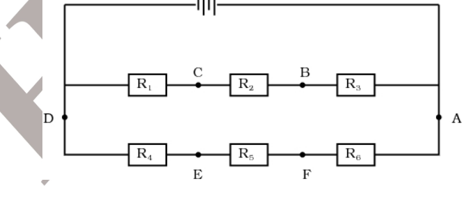
When a resistor of resistance is connected between D & F, no current flows through the galvanometer (not shown in the figure) connected between C & F. Calculate the value of .
- (a) 10
- (b) 15
- (c) 5
- (d) 30
Topic: Circuits Metodi: Kirchhoff’s Laws, Equivalent Circuit Reduction Competenze: Mathematical Modeling Objects: Resistor, Battery, Galvanometer Fonte: Testo (PDF) — p.9
Nel circuito seguente, ogni resistore ha una resistenza di 15 e la batteria ha un e.m.f. di 12 V con una resistenza interna trascurabile.
Quesito 28
Quando una resistenza è collegata tra D & F, nessun flusso di corrente attraversa il galvanometro (non mostrato nella figura) collegato tra C & F. Calcolare il valore di .
- (a) 10
- (b) 15
- (c) 5
- (d) 30
Topic: Circuits Metodi: Kirchhoff’s Laws, Equivalent Circuit Reduction Competenze: Mathematical Modeling Objects: Resistor, Battery, Galvanometer Fonte: Testo (PDF) — p.9
Real gases can be described by the Van der Waal’s equation as:
The compressibility factor for a gas is defined by . Which of the following statements is correct?
- (a) When , real gases are difficult to compress than the ideal gases.
- (b) When , real gases are easy to compress than the ideal gases.
- (c) When , real gases are difficult to compress than the ideal gases.
- (d) When , real gases are difficult to compress than the ideal gases.
Topic: Kinetic Theory, Chemistry Metodi: Ideal Gas Law Competenze: Physical Reasoning Objects: Gas Fonte: Testo (PDF) — p.10
I gas reali possono essere descritti dall’equazione di Van der Waal come:
Il fattore di compressibilità di un gas è definito da . Quale delle seguenti affermazioni è corretta?
- a) Quando , i gas reali sono difficili da comprimere rispetto ai gas ideali.
- b) Quando , i gas reali sono più facili da comprimere dei gas ideali.
- (c) Quando , i gas reali sono difficili da comprimere rispetto ai gas ideali.
- (d) Quando , i gas reali sono difficili da comprimere rispetto ai gas ideali.
Topic: Kinetic Theory, Chemistry Metodi: Ideal Gas Law Competenze: Physical Reasoning Objects: Gas Fonte: Testo (PDF) — p.10
Nisha was found to be affected with a genetic disease. The genetic counselor Dr. Dasgupta asked her to gather information about her lineage. Dr. Dasgupta then made a pedigree chart for four generations based on the information provided by Nisha. From the following pedigree chart, what can you infer about the inheritance pattern in Nisha’s family?
Quesito 30
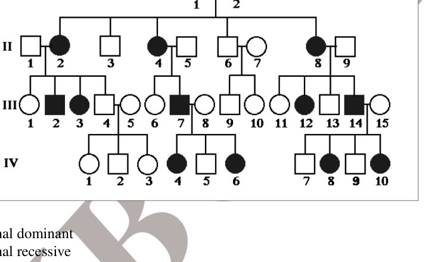
- (a) Autosomal dominant
- (b) Autosomal recessive
- (c) X-linked dominant
- (d) X-linked recessive
Topic: Biology Metodi: Physical Modeling Competenze: Diagrammatic Reasoning Objects: — Fonte: Testo (PDF) — p.10
Si è scoperto che Nisha era affetta da una malattia genetica. Il consulente genetico Dr. Dasgupta le ha chiesto di raccogliere informazioni sulla sua stirpe. Dr. Dasgupta fece poi una tabella di pedigree per quattro generazioni basata sulle informazioni fornite da Nisha. Dalla seguente tabella genealogica, cosa si può dedurre sul modello di eredità nella famiglia di Nisha?
Quesito 30
- a) Autosomal dominant
- b) Autosomal recessive
- c) L’impegno dominante con collegamento X
- d) Recessivo con X-link
Topic: Biology Metodi: Physical Modeling Competenze: Diagrammatic Reasoning Objects: — Fonte: Testo (PDF) — p.10
Consider a gas enclosed in a cylinder with frictionless piston. When the gas is compressed at constant temperature by the piston, the pressure of the gas increases. Consider the following statements:
- i. The average speed of the molecules increases.
- ii. The rate at which the molecules collide with the piston increases.
- iii. The molecules collide with each other more often.
Which of the above statement(s) is/are correct?
- (a) i only
- (b) iii only
- (c) ii & iii only
- (d) all three are correct
Topic: Kinetic Theory Metodi: Kinetic Theory of Gases Competenze: Physical Reasoning Objects: Gas, Cylinder, Piston Fonte: Testo (PDF) — p.10
Considerate un gas chiuso in un cilindro con pistone senza attrito. Quando il gas viene compresso a temperatura costante dal pistone, la pressione del gas aumenta. Considerate le seguenti affermazioni:
- i. La velocità media delle molecole aumenta.
- ii. La velocità con cui le molecole si scontrano con il pistone aumenta.
- III. Le molecole si collidono più spesso.
Quali delle affermazioni sopra indicate sono/sono corrette?
- (a) solo
- b) solo iii
- c) solo ii e iii
- d) tutte e tre sono corrette
Topic: Kinetic Theory Metodi: Kinetic Theory of Gases Competenze: Physical Reasoning Objects: Gas, Cylinder, Piston Fonte: Testo (PDF) — p.10
Sumit went to a fun fair with his friends Amit and Rohit. Amit being scared to sit on a merry go round and preferred to stroll around. Sumit was very excited when he came down the merry go round. How will this change the pH of his blood?
- (a) increases
- (b) decreases
- (c) no change in pH
- (d) pH level gets adjusted at 7
Topic: Biology Metodi: Physical Modeling Competenze: Physical Reasoning Objects: — Fonte: Testo (PDF) — p.11
Sumit è andato a una fiera divertente con i suoi amici Amit e Rohit. Amit aveva paura di sedersi su un giro allegro e preferì passeggiare. Sumit era molto eccitato quando è venuto giù il giro allegro. Come cambierà il pH del suo sangue?
- a) incrementi
- b) diminuzioni
- c) nessuna variazione del pH
- (d) il livello di pH viene regolato a 7
Topic: Biology Metodi: Physical Modeling Competenze: Physical Reasoning Objects: — Fonte: Testo (PDF) — p.11
Which of the following statement/s is/are true for Maize (Zea mays)?
-
i. CO is fixed only once in the process of photosynthesis.
-
ii. CO is fixed twice in the process of photorespiration.
-
iii. It undergoes the process of photorespiration.
-
iv. CO can be fixed even in very low concentrations during photosynthesis.
-
(a) i & iii
-
(b) ii only
-
(c) i & iv
-
(d) ii & iv
Topic: Biology Metodi: Physical Modeling Competenze: Physical Reasoning Objects: — Fonte: Testo (PDF) — p.11
Qual è/sono le seguenti affermazioni/sade per il mais (Zea mays)?
-
i. CO viene fissato solo una volta nel processo di fotosintesi.
-
ii. CO viene fissato due volte nel processo di fotorespirazione.
-
III. Subisce il processo di fotorespirazione.
-
iv. CO può essere fissato anche in concentrazioni molto basse durante la fotosintesi.
-
a) i & iii
-
b) solo ii
-
(c) i & iv
-
(d) ii & iv
Topic: Biology Metodi: Physical Modeling Competenze: Physical Reasoning Objects: — Fonte: Testo (PDF) — p.11
White light is incident on one of the refracting faces of a prism. Inside the prism,
- i. at normal incidence, the blue light slows down more than red light
- ii. at normal incidence, blue light refracts same as red light
- iii. for oblique incidence, blue light bends more than red light
- iv. for oblique incidence, blue light slows down more than the red light
Which of the above statements are correct?
- (a) i & iv
- (b) i, iii & iv
- (c) ii, iii & iv
- (d) i, ii, iii & iv
Topic: Geometric Optics Metodi: Snell’s Law Competenze: Physical Reasoning Objects: Prism Fonte: Testo (PDF) — p.11
La luce bianca è incidente su una delle facce refratte di un prisma. All’interno del prisma,
- i. con una frequenza normale, la luce blu rallenta più di quella rossa
- ii. a frequenza normale, la luce blu si rifregge come la luce rossa
- III. per l’incidenza obliqua, la luce blu si piega più che la luce rossa
- iv. per l’incidenza obliqua, la luce blu rallenta più di quella rossa
Quali delle affermazioni sopra esposte sono corrette?
- (a) i & iv
- b) i, iii e iv
- c) ii, iii e iv
- d) i, ii, iii e iv
Topic: Geometric Optics Metodi: Snell’s Law Competenze: Physical Reasoning Objects: Prism Fonte: Testo (PDF) — p.11
All chemical reactions with dissociation can be of following type/s :
-
i. reversible
-
ii. irreversible
-
iii. endothermic
-
iv. exothermic
-
(a) i, ii, iii
-
(b) ii, iii, iv
-
(c) i, iii, iv
-
(d) i,ii,iv
Topic: Chemistry Metodi: Physical Modeling Competenze: Physical Reasoning Objects: — Fonte: Testo (PDF) — p.11
Tutte le reazioni chimiche con dissociazione possono essere di tipo o di tipo seguente:
-
i. reversibili
-
ii. irreversibili
-
III. endotermici
-
iv. esotermica
-
a) i, ii, iii
-
b) ii, iii, iv
-
c) i, iii, iv
-
(d) i,ii,iv
Topic: Chemistry Metodi: Physical Modeling Competenze: Physical Reasoning Objects: — Fonte: Testo (PDF) — p.11
Polyomavirus (a DNA virus) causes tumors in “nude mice” (nude mice do not have a thymus, because of a genetic defect but otherwise in normal mice). The best interpretation is that…
- (a) macrophages are required to reject polyomavirus-induced tumors.
- (b) natural killer cells can reject polyomavirus-induced tumors without help from T lymphocytes.
- (c) T lymphocytes play an important role in the rejection of polyomavirus-induced tumors.
- (d) B lymphocytes play no role in rejection of polyomavirus-induced tumors.
Topic: Biology Metodi: Physical Modeling Competenze: Physical Reasoning Objects: — Fonte: Testo (PDF) — p.11
Il poliomavirus (un virus del DNA) provoca tumori nei “musci nudi” (i topi nudi non hanno un timo, a causa di un difetto genetico ma altrimenti nei topi normali). La migliore interpretazione è che…
- (a) i macrophagi sono necessari per respingere i tumori indotti dal poliomavirus.
- (b) le cellule naturali assassine possono respingere i tumori indotti dal poliomavirus senza l’aiuto dei linfociti T.
- (c) I linfociti T svolgono un ruolo importante nel rifiuto dei tumori indotti dal poliomavirus.
- (d) I linfociti B non svolgono alcun ruolo nel rifiuto dei tumori indotti dal poliomavirus.
Topic: Biology Metodi: Physical Modeling Competenze: Physical Reasoning Objects: — Fonte: Testo (PDF) — p.11
The circuit given below is for the operation of an industrial fan. The resistance of the fan is 3 ohms. The regulator provided with the fan is a fixed resistor and a variable resistor in parallel.
Quesito 37
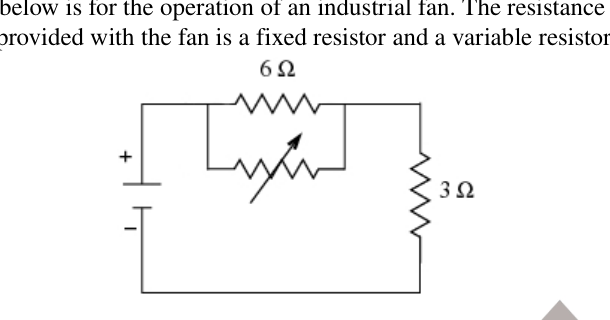
Under what value of the variable resistances given below, power transferred to the fan will be maximum? The power source of the fan is a dc source with internal resistance of 6 ohms.
- (a)
- (b) 0
- (c)
- (d)
Topic: Circuits Metodi: Equivalent Circuit Reduction Competenze: Mathematical Modeling Objects: Resistor, Battery Fonte: Testo (PDF) — p.12
Il circuito di seguito indicato è destinato al funzionamento di un ventilatore industriale. La resistenza del ventilatore è di 3 ohms. Il regolatore fornito con il ventilatore è un resistore fisso e un resistore variabile in parallelo.
Quesito 37
In base a quale valore delle resistenze variabili indicate di seguito, la potenza trasferita al ventilatore sarà massima? La fonte di alimentazione del ventilatore è una fonte di corrente continua con resistenza interna di 6 ohms.
- (a)
- (b) 0
- (c)
- (d)
Topic: Circuits Metodi: Equivalent Circuit Reduction Competenze: Mathematical Modeling Objects: Resistor, Battery Fonte: Testo (PDF) — p.12
All mutations in genetic material may not lead to change in amino acid composition. Though there is a change in the codon, it is not expressed in the amino acids. Such mutations are called as ‘silent mutations’. Which of the following alternation of codons ATCGCC is NOT a ‘silent mutation’?
- (a) ATCGCT
- (b) ATTGCA
- (c) ATTTGC
- (d) ATCGCG
Topic: Biology Metodi: Physical Modeling Competenze: Physical Reasoning Objects: — Fonte: Testo (PDF) — p.12
Tutte le mutazioni nel materiale genetico non possono portare a cambiamenti nella composizione degli amminoacidi. Sebbene ci sia un cambiamento nel codone, non si esprime negli amminoacidi. Tali mutazioni sono chiamate “mutazioni silenziose”. Qual è tra le seguenti alternanze di codoni ATCGCC che NON è una “muta silenziosa”?
- a) ATCGCT
- b) ATTGCA
- c) ATTTGC
- d) ATCGCG
Topic: Biology Metodi: Physical Modeling Competenze: Physical Reasoning Objects: — Fonte: Testo (PDF) — p.12
A diver releases bubbles of gas from the bottom of a lake. The bubbles increase to 10 times of their original volume when they reach the surface. Assuming that the pressure exerted by a column of water of 5m height is double the atmospheric pressure, the depth of the lake is…
- (a) 45m
- (b) 90m
- (c) 80m
- (d) 22.8m
Topic: Fluid Mechanics, Kinetic Theory Metodi: Ideal Gas Law, Hydrostatic Equilibrium Competenze: Mathematical Modeling Objects: Bubble Fonte: Testo (PDF) — p.12
Un subacqueo rilascia bolle di gas dal fondo di un lago. Le bolle aumentano a 10 volte il loro volume originale quando raggiungono la superficie. Supponendo che la pressione esercitata da una colonna d’acqua di 5 metri di altezza sia doppia della pressione atmosferica, la profondità del lago è…
- (a) 45m
- (b) 90m
- (c) 80m
- (d) 22.8m
Topic: Fluid Mechanics, Kinetic Theory Metodi: Ideal Gas Law, Hydrostatic Equilibrium Competenze: Mathematical Modeling Objects: Bubble Fonte: Testo (PDF) — p.12
ATP is known as energy currency of a cell. ATP is synthesized from ADP and Pi. The reaction is catalyzed by an enzyme called as ATP synthase. When the enzyme and substrate (ADP) are distant inside the cell, the reaction cannot take place spontaneously. Which of the following statements best explains the cause for the ATP synthase and ADP to interact?
- (a) Electronegativity of ADP attracts ATP synthase
- (b) ADP will be actively pumped to ATP synthase
- (c) Random movements will bring ADP to ATP synthase
- (d) ADP and ATP synthase always remain bound to oxysomes
Topic: Biology Metodi: Physical Modeling Competenze: Physical Reasoning Objects: — Fonte: Testo (PDF) — p.12
L’ATP è conosciuta come valuta energetica di una cellula. L’ATP viene sintetizzato da ADP e Pi. La reazione è catalizzata da un enzima chiamato ATP sintasi. Quando l’enzima e il substrato (ADP) sono lontani all’interno della cellula, la reazione non può avvenire spontaneamente. Quale delle seguenti affermazioni spiega meglio la causa dell’interazione tra ATP sintasi e ADP?
- a) L’elettronegatività dell’ADP attira la sintasi ATP
- b) L’ADP verrà pompato attivamente in ATP sintasi
- (c) I movimenti casuali porteranno ADP alla sintasi ATP
- (d) La sintasi di ADP e ATP rimane sempre legata agli ossisomi
Topic: Biology Metodi: Physical Modeling Competenze: Physical Reasoning Objects: — Fonte: Testo (PDF) — p.12
A submarine is floating on water, half submerged (position A). It is then lowered to position B where it sits for a while. Later the submarine is taken to position C and submarine waits there before it is finally taken to the rest position at the bottom of the sea, which is position D. Assume that density of water and value of is same everywhere.
Quesito 41
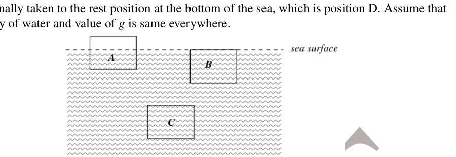
Which of the following is correct for buoyancy force at the 4 places?
- (a)
- (b)
- (c)
- (d)
Topic: Fluid Mechanics Metodi: Hydrostatic Equilibrium Competenze: Physical Reasoning Objects: — Fonte: Testo (PDF) — p.13
Un sottomarino galleggia sull’acqua, mezzo sommerso (posizione A). Si abbassa poi alla posizione B, dove si trova per un po’. In seguito il sottomarino viene portato alla posizione C e l’ sottomarino aspetta lì prima di essere finalmente portato alla posizione di riposo al fondo del mare, che è la posizione D. Supponiamo che la densità dell’acqua e il valore di siano uguali ovunque.
Quesito 41
Qual è la corretta forza di galleggiamento nei 4 punti?
- (a)
- (b)
- (c)
- (d)
Topic: Fluid Mechanics Metodi: Hydrostatic Equilibrium Competenze: Physical Reasoning Objects: — Fonte: Testo (PDF) — p.13
Glucose, a carbohydrate, is used by cells as a primary source of energy and metabolic intermediate. If 100 g of glucose is oxidized, it releases 1560 kJ of energy. Manish is given 100 g of glucose. Manish utilizes 50% of the gained energy in the event. Rest of the energy is used up in the process of sweating (evaporation). How much quantity of water Manish has to drink to compensate for this sweating. Consider enthalpy of evaporation of water to be 44 kJ/mole.
- (a) 319 ml
- (b) 345 ml
- (c) 2300 ml
- (d) 3300 ml
Topic: Thermodynamics, Biology Metodi: First Law of Thermodynamics Competenze: Mathematical Modeling Objects: — Fonte: Testo (PDF) — p.13
Il glucosio, un carboidrato, è usato dalle cellule come fonte primaria di energia e come intermedio metabolico. Se 100 g di glucosio sono ossidati, rilascia 1560 kJ di energia. Manish riceve 100 g di glucosio. Manish utilizza il 50% dell’energia ottenuta nell’evento. Il resto dell’energia viene utilizzato nel processo di sudorazione (evaporazione). Quanta acqua Manish deve bere per compensare questa sudorazione. Considera l’entalpia di evaporazione dell’acqua di 44 kJ/mole.
- (a) 319 ml
- (b) 345 ml
- (c) 2300 ml
- (d) 3300 ml
Topic: Thermodynamics, Biology Metodi: First Law of Thermodynamics Competenze: Mathematical Modeling Objects: — Fonte: Testo (PDF) — p.13
10 g of ice at is added to 10 g of water at . What is the final temperature and amount of ice left in the system? (System is kept inside an ideal insulator).
- (a) , 0 g
- (b) , 2 g
- (c) , 0 g
- (d) , 5 g
Topic: Thermodynamics Metodi: First Law of Thermodynamics Competenze: Mathematical Modeling Objects: — Fonte: Testo (PDF) — p.13
10 g di ghiaccio a si aggiungono a 10 g di acqua a . Qual è la temperatura finale e la quantità di ghiaccio che rimane nel sistema? (Il sistema è conservato all’interno di un isolante ideale).
- (a) , 0 g
- (b) , 2 g
- (c) , 0 g
- (d) , 5 g
Topic: Thermodynamics Metodi: First Law of Thermodynamics Competenze: Mathematical Modeling Objects: — Fonte: Testo (PDF) — p.13
Which of the following is NOT TRUE for the cleavage in human zygote?
- (a) The number of cells increase by mitotic division.
- (b) The embryo size goes on increasing with every cleavage.
- (c) The volume of cytoplasm of each cell decreases with every cleavage.
- (d) The cleavage starts when the egg is in the fallopian tube.
Topic: Biology Metodi: Physical Modeling Competenze: Physical Reasoning Objects: — Fonte: Testo (PDF) — p.13
Quale di queste non è vero per la scissione dello zygote umano?
- (a) Il numero delle cellule aumenta con la divisione mitotica.
- (b) La dimensione dell’ embrione aumenta con ogni scissione.
- (c) Il volume del citoplasma di ciascuna cellula diminuisce con ogni scissione.
- (d) La scissione inizia quando l’ uovo è nel tubo di faloppio.
Topic: Biology Metodi: Physical Modeling Competenze: Physical Reasoning Objects: — Fonte: Testo (PDF) — p.13
The diagram shows a lift system in which the elevator (mass ) is partly counterbalanced by a heavy weight (mass ).
Quesito 45
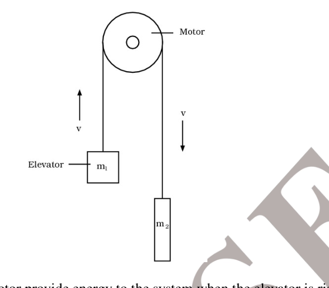
At what rate does the motor provide energy to the system when the elevator is rising at a steady speed ? ( = acceleration of free fall) (consider the pulley as frictionless at the pivot)
- (a)
- (b)
- (c) , i.e.
- (d)
Topic: Conservation of Energy Metodi: Conservation of Energy Competenze: Mathematical Modeling Objects: Pulley Fonte: Testo (PDF) — p.14
Il diagramma mostra un sistema di sollevamento in cui l’ascensore (massa ) è parzialmente controbilanciato da un peso pesante (massa ).
Quesito 45
A che velocità il motore fornisce energia al sistema quando l’ascensore sale a velocità costante ? ( = accelerazione della caduta libera) (considera la polla senza attrito al pivot)
- (a)
- (b)
- (c) , i.e.
- (d)
Topic: Conservation of Energy Metodi: Conservation of Energy Competenze: Mathematical Modeling Objects: Pulley Fonte: Testo (PDF) — p.14
The following reaction is at equilibrium in a given cylinder of constant volume.
Addition of argon gas to the cylinder will
- (a) reduce the formation of NH with no change in temperature of the equilibrium system.
- (b) Increase the formation of NH with increase in temperature.
- (c) reduce the formation of NH with decrease in temperature.
- (d) increase the formation of NH with no change in temperature of the equilibrium system.
Topic: Chemistry Metodi: Physical Modeling Competenze: Physical Reasoning Objects: Gas, Cylinder Fonte: Testo (PDF) — p.14
La seguente reazione è in equilibrio in un determinato cilindro di volume costante.
L’aggiunta di argone al cilindro
- (a) ridurre la formazione di NH senza alcun cambiamento di temperatura del sistema di equilibrio.
- (b) Aumentare la formazione di NH con l’ aumento della temperatura.
- (c) ridurre la formazione di NH con diminuzione della temperatura.
- (d) aumentare la formazione di NH senza alcun cambiamento di temperatura del sistema di equilibrio.
Topic: Chemistry Metodi: Physical Modeling Competenze: Physical Reasoning Objects: Gas, Cylinder Fonte: Testo (PDF) — p.14
A heart is said to be missing when it has pacemaker…
- (a) originating in minor nerves present in the heart muscles.
- (b) originating in motor nerves present near the heart.
- (c) made up of specialized muscle tissues and located in the heart itself.
- (d) made up of specialized muscle tissues and located near the heart.
Topic: Biology Metodi: Physical Modeling Competenze: Physical Reasoning Objects: — Fonte: Testo (PDF) — p.14
Si dice che un cuore manca quando ha un pacemaker…
- (a) originari di nervi minori presenti nei muscoli cardiaci.
- (b) provenienti da nervi motori presenti vicino al cuore.
- (c) costituito da tessuti muscolari specializzati e situati nel cuore stesso.
- (d) costituito da tessuti muscolari specializzati e situati vicino al cuore.
Topic: Biology Metodi: Physical Modeling Competenze: Physical Reasoning Objects: — Fonte: Testo (PDF) — p.14
A balloon initially contains 7 g of Nitrogen, and then 14 g of Nitrogen is added to the balloon to expand its volume to 12 litre at the same temperature and pressure. Find the initial volume of the balloon.
- (a) 8 litre
- (b) 7 litre
- (c) 5.6 litre
- (d) 4 litre
Topic: Kinetic Theory Metodi: Ideal Gas Law Competenze: Mathematical Modeling Objects: Gas Fonte: Testo (PDF) — p.14
Un pallone contiene inizialmente 7 g di azoto, e poi 14 g di azoto vengono aggiunti al pallone per ampliarne il volume a 12 litri alla stessa temperatura e pressione. Trova il volume iniziale del palloncino.
- a) 8 litri
- b) 7 litri
- 5,6 litri
- 4 litri
Topic: Kinetic Theory Metodi: Ideal Gas Law Competenze: Mathematical Modeling Objects: Gas Fonte: Testo (PDF) — p.14
When all the resistances in the circuit are 1 each, then the equivalent resistance across points A & B will be:
Quesito 49
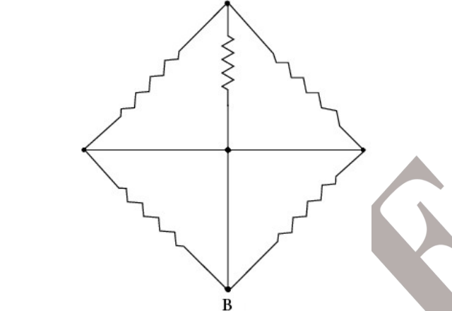
- (a)
- (b)
- (c)
- (d)
Topic: Circuits Metodi: Equivalent Circuit Reduction Competenze: Mathematical Modeling Objects: Resistor Fonte: Testo (PDF) — p.15
Quando tutte le resistenze del circuito sono 1 ciascuno, allora la resistenza equivalente tra i punti A e B sarà:
Quesito 49
- (a)
- (b)
- (c)
- (d)
Topic: Circuits Metodi: Equivalent Circuit Reduction Competenze: Mathematical Modeling Objects: Resistor Fonte: Testo (PDF) — p.15
Which of the following statements about food chains is FALSE?
- (a) A single organism can feed at different trophic levels.
- (b) The lower the trophic level at which the organism feeds, the more energy is available.
- (c) All organisms that are not producers are consumers.
- (d) Detrivores feed organisms of all trophic levels except those at the producer level.
Topic: Biology Metodi: Physical Modeling Competenze: Physical Reasoning Objects: — Fonte: Testo (PDF) — p.15
Quale delle seguenti affermazioni sulle catene alimentari è FALSA?
- a) Un singolo organismo può nutrirsi a diversi livelli trofici.
- b) Più basso è il livello trofico al quale l’organismo si nutre, più energia è disponibile.
- c) Tutti gli organismi che non sono produttori sono consumatori.
- (d) Deteriora gli organismi alimentari di tutti i livelli trofici, ad eccezione di quelli a livello di produttore.
Topic: Biology Metodi: Physical Modeling Competenze: Physical Reasoning Objects: — Fonte: Testo (PDF) — p.15
A mixture of 0.3 moles of H and 0.3 moles of I are allowed to react in 10 litre evacuated flask at . The reaction is
Value of is found to be 64. The amount of I present at equilibrium is
- (a) 0.15 mole
- (b) 0.06 mole
- (c) 0.03 mole
- (d) 0.2 mole
Topic: Chemistry Metodi: Physical Modeling Competenze: Mathematical Modeling Objects: Gas, Container Fonte: Testo (PDF) — p.15
Una miscela di 0,3 mol di H e 0,3 mol di I è consentita di reagire in un flacone evacuato da 10 litri a . La reazione è
Il valore di è stato rilevato come 64. La quantità di I presente in equilibrio è
- a) 0,15 mol
- b) 0,06 mol
- c) 0,03 mol
- d) 0,2 mol
Topic: Chemistry Metodi: Physical Modeling Competenze: Mathematical Modeling Objects: Gas, Container Fonte: Testo (PDF) — p.15
In forensic science, DNA fingerprinting is a useful technique to trace genetic identity, relatedness and tissue matching. Which of the following material/tissue DOES NOT find any use in DNA fingerprinting?
- (a) Leucocytes
- (b) Erythrocytes
- (c) Sperms
- (d) Saliva
Topic: Biology Metodi: Physical Modeling Competenze: Physical Reasoning Objects: — Fonte: Testo (PDF) — p.15
Nella scienza forense, l’impronta digitale del DNA è una tecnica utile per tracciare l’identità genetica, la relazione e la corrispondenza dei tessuti. Quale dei seguenti materiali/tissuti NON trova alcun uso nell’immagine digitale del DNA?
- a) Leociti
- b) Eritrociti
- (c) Spermi
- d) Saliva
Topic: Biology Metodi: Physical Modeling Competenze: Physical Reasoning Objects: — Fonte: Testo (PDF) — p.15
A cathode ray oscilloscope (CRO) is a device which converts electrical signals into an active graphical representation on a fluorescent screen. The x axis is always time axis, where the 1cm is equal to a preset time scale called time base. A sound wave is displayed on the screen of a cathode-ray oscilloscope. The time base of the CRO is set at 2.5 ms / cm.
Quesito 53
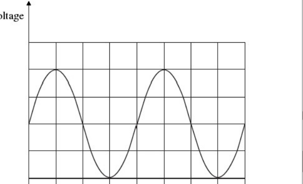
What is the frequency of the sound wave?
- (a) 50 Hz
- (b) 100 Hz
- (c) 200 Hz
- (d) 400 Hz
Topic: Oscillations & Waves Metodi: Physical Modeling Competenze: Diagrammatic Reasoning Objects: Screen Fonte: Testo (PDF) — p.16
Un osciloscopio a raggi catodici (CRO) è un dispositivo che converte i segnali elettrici in una rappresentazione grafica attiva su uno schermo fluorescente. L’asse x è sempre l’asse temporale, dove l’asse 1cm è uguale a una scala temporale predefinita chiamata base temporale. Un’onda sonora viene visualizzata sullo schermo di un osciloscopio a raggi catodici. La base temporale del CRO è fissata a 2,5 ms / cm.
Quesito 53
Qual è la frequenza dell’onda sonora?
- (a) 50 Hz
- (b) 100 Hz
- (c) 200 Hz
- (d) 400 Hz
Topic: Oscillations & Waves Metodi: Physical Modeling Competenze: Diagrammatic Reasoning Objects: Screen Fonte: Testo (PDF) — p.16
If at the top of a mountain the temperature is and the pressure is 0.934 atm and at the bottom of the mountain, the temperature is and the pressure is 1 atm. The ratio of density (considering the ideal gas situation) of air at the top, to that at the bottom of the mountain is:
- (a) 1 : 1
- (b) 1 : 1.4
- (c) 1.04 : 1
- (d) 1.5 : 1
Topic: Kinetic Theory Metodi: Ideal Gas Law Competenze: Mathematical Modeling Objects: Gas Fonte: Testo (PDF) — p.16
Se in cima a una montagna la temperatura è e la pressione è di 0,934 atm e in fondo alla montagna la temperatura è e la pressione è di 1 atm. Il rapporto tra la densità (considerando la situazione ideale del gas) dell’aria in cima e quella in fondo alla montagna è:
- (a) 1 : 1
- (b) 1 : 1.4
- (c) 1.04 : 1
- (d) 1.5 : 1
Topic: Kinetic Theory Metodi: Ideal Gas Law Competenze: Mathematical Modeling Objects: Gas Fonte: Testo (PDF) — p.16
The Axolotl larva of salamander is kept in water where iodine is absent then…
- (a) there will be no effect on its metamorphosis.
- (b) it will metamorphose but remain sexually immature.
- (c) it will fail to metamorphose but become sexually mature.
- (d) it will fail to metamorphose and will remain sexually immature also.
Topic: Biology Metodi: Physical Modeling Competenze: Physical Reasoning Objects: — Fonte: Testo (PDF) — p.16
La larva di salamandra *Axolotl * viene conservata in acqua dove l’iodio è assente quindi…
- a) non avrà alcun effetto sulla sua metamorfosi.
- (b) si metamorfosi ma rimane sessualmente immatura.
- (c) non si metamorfosi, ma diventa matura sessualmente.
- d) non si metamorfosi e rimarrà anche sessualmente immatura.
Topic: Biology Metodi: Physical Modeling Competenze: Physical Reasoning Objects: — Fonte: Testo (PDF) — p.16
A ball is released from rest above a horizontal surface. The graph shows the variation with time of its velocity (not to scale). The scale on this graph is changed at every impact. A, B, C, D and E represent areas. Which of the following are correct?
Quesito 56
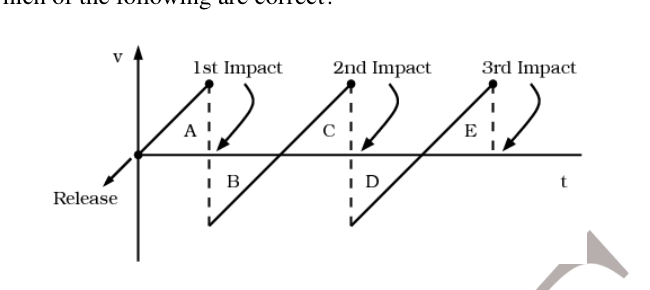
- (a) A = B & B = C
- (b) A = C & C = E
- (c) B = C & D = E
- (d) all of the above
Topic: Newtonian Mechanics Metodi: Kinematic Equations Competenze: Diagrammatic Reasoning Objects: Ball Fonte: Testo (PDF) — p.17
Una palla viene rilasciata dal riposo sopra una superficie orizzontale. Il grafico mostra la variazione nel tempo della sua velocità (non a scala). La scala su questo grafico cambia ad ogni impatto. A, B, C, D ed E rappresentano aree. Quale delle seguenti è corretta?
Quesito 56
- (a) A = B & B = C
- (b) A = C & C = E
- (c) B = C & D = E
- d) tutti i suddetti
Topic: Newtonian Mechanics Metodi: Kinematic Equations Competenze: Diagrammatic Reasoning Objects: Ball Fonte: Testo (PDF) — p.17
When a certain amount of ethylene (CH) was combusted, 6226 kJ heat was evolved. If heat of combustion of ethylene is 1411 kJ/mole, the volume of oxygen that entered into the reaction at STP is nearly…
- (a) 296 ml
- (b) 296 litre
- (c) litre
- (d) 22.4 litre
Topic: Chemistry Metodi: Physical Modeling Competenze: Mathematical Modeling Objects: Gas Fonte: Testo (PDF) — p.17
Quando una certa quantità di etileno (CH) è stata bruciata, si è sviluppato il calore di 6226 kJ. Se il calore di combustione dell’etilene è di 1411 kJ/mole, il volume di ossigeno che è entrato nella reazione a STP è quasi…
- (a) 296 ml
- b) 296 litri
- c) litro
- 22,4 litri
Topic: Chemistry Metodi: Physical Modeling Competenze: Mathematical Modeling Objects: Gas Fonte: Testo (PDF) — p.17
A certain network consists of two ideal and identical voltage sources in series and a large number of ideal resistors. The power consumed is one of the reasons it is 4W when either of the two sources is active and other is replaced by a short circuit. The power consumed by same resistor when both sources are simultaneously active would be:
- (a) 0 or 16W
- (b) 4W or 8W
- (c) 0 or 8W
- (d) 8W or 16W
Topic: Circuits Metodi: Superposition Principle Competenze: Physical Reasoning Objects: Battery, Resistor Fonte: Testo (PDF) — p.17
Una certa rete è costituita da due fonti di tensione ideali e identiche in serie e da un gran numero di resistenti ideali. La potenza consumata è uno dei motivi per cui è 4W quando una delle due fonti è attiva e l’altra è sostituita da un cortocircuito. La potenza consumata dallo stesso resistore quando entrambe le fonti sono simultaneamente attive sarebbe:
- (a) 0 or 16W
- (b) 4W or 8W
- (c) 0 or 8W
- (d) 8W or 16W
Topic: Circuits Metodi: Superposition Principle Competenze: Physical Reasoning Objects: Battery, Resistor Fonte: Testo (PDF) — p.17
Few sex celled and most nucleated female gametophyte of an angiospermic plant is produced as a result of __________ divisions of functional megaspore.
- (a) three meiotic
- (b) one meiotic and two mitotic
- (c) two mitotic
- (d) one meiotic and three mitotic
Topic: Biology Metodi: Physical Modeling Competenze: Physical Reasoning Objects: — Fonte: Testo (PDF) — p.17
Poche cellule sessuali e la maggior parte dei gametofiti femminili nucleati di una pianta angiospermica sono prodotti a seguito di __________ divisioni di megaspore funzionali.
- a) tre mezzotici
- b) una mezzotica e due mitotiche
- c) due mitotici
- d) una mezzotica e tre mitotiche
Topic: Biology Metodi: Physical Modeling Competenze: Physical Reasoning Objects: — Fonte: Testo (PDF) — p.17
60 ml ammonia undergoes oxidation with 60 ml of oxygen. If the reaction continues until one of the gases is completely consumed, the volume of water vapour produced will be:
- (a) 48 ml
- (b) 60 ml
- (c) 72 ml
- (d) 84 ml
Topic: Chemistry Metodi: Physical Modeling Competenze: Mathematical Modeling Objects: Gas Fonte: Testo (PDF) — p.17
60 ml di ammoniaca subiscono ossidazione con 60 ml di ossigeno. Se la reazione continua fino a quando uno dei gas non è completamente consumato, il volume di vapore idrico prodotto sarà:
- (a) 48 ml
- (b) 60 ml
- (c) 72 ml
- (d) 84 ml
Topic: Chemistry Metodi: Physical Modeling Competenze: Mathematical Modeling Objects: Gas Fonte: Testo (PDF) — p.17
Section B (analytical / long questions). Questions 61 to 68 are of 5 marks each. Marks will also be indicated in the questions if there are more than one part to it.
(a) Sachin was suffering from problem of acidity, so visited a physician who advised him to take 0.025 dm of milk of magnesia for a fast relief. He exactly followed what the doctor told him to do. Out of curiosity he saw the label on milk of magnesia bottle and he found that there were different ingredients written on it and the concentration of milk of magnesia mentioned was 29 ppm. Assuming, the volume of milk of magnesia mentioned was 29 ppm and the volume of milk of magnesia, help Sachin to find out the following:
- i. How many moles of acid was produced in Sachin’s stomach? (0.5 mark)
- ii. Write down the neutralization reaction of this process. (0.5 mark)
- iii. Calculate the concentration of acid produced in mol/dm. (2 marks)
Total: 3 Marks
(b) Esha takes three flasks (, , ) with colorless contents. When Esha added content of flask '' to that of flask '', contents of flask '' turned pink. When she added contents of flask '' to contents of flask '' then contents of flask '' turned colorless. Now she added contents of flask '' (which is flask '') to flask '' and flask '' changed to green. According to you what is present in flask , , and .
Total: 2 Marks
Total: 5 Marks
Topic: Chemistry Metodi: Physical Modeling Competenze: Mathematical Modeling Objects: Container Fonte: Testo (PDF) — p.18
**Sezione B (interrogazioni analisiche / lunghe). ** Le domande da 61 a 68 sono di 5 punti ciascuno. Le domande sono inoltre segnalate se sono costituite da più di una parte.
(a) Sachin soffriva di un problema di acidità, quindi ha visitato un medico che gli ha consigliato di prendere 0,025 dm di latte di magnesia per un sollievo rapido. Ha seguito esattamente quello che il dottore gli ha detto di fare. Per curiosità ha visto l’etichetta sul latte della bottiglia di magnesia e ha scoperto che ci sono diversi ingredienti scritti su di esso e la concentrazione di latte di magnesia menzionato è stata di 29 ppm. Supponendo che il volume di latte di magnesia menzionato fosse di 29 ppm e il volume di latte di magnesia, aiuta Sachin a scoprire quanto segue:
- i. Quanti mole di acido sono stati prodotti nello stomaco di Sachin? *(0,5 marchio) *
- ii. Scrivi la reazione di neutralizzazione di questo processo. *(0,5 marchio) *
- III. Calcolare la concentrazione di acido prodotta in mol/dm. *(2 marchi) *
Total: 3 Marks
b) Esha prende tre bottiglie (, , ) con contenuti incolori. Quando Esha ha aggiunto il contenuto del flacone "" a quello del flacone "", il contenuto del flacone "" è diventato rosa. Quando ha aggiunto il contenuto del flaconcino "" al contenuto del flaconcino "", il contenuto del flaconcino "" è diventato incolore. Ora ha aggiunto contenuti di flaconcino "" (che è flaconcino "") al flaconcino "" e colla "" cambiato in verde. Secondo voi, ciò che è presente nel flacone , , e .
Total: 2 Marks
Total: 5 Marks
Topic: Chemistry Metodi: Physical Modeling Competenze: Mathematical Modeling Objects: Container Fonte: Testo (PDF) — p.18
(a) Esha exists at up to height cm in a uniform cylindrical vessel (with no air gaps). Water at temperature is filled in another identical vessel up to the same height cm. Now, water from second vessel is poured into first vessel and is found that level of upper surface falls through cm when thermal equilibrium is reached.
Neglecting the thermal capacity of vessels, change in density of water due to change in temperature and loss of heat due to radiation, calculate the initial temperature of water. Use density of ice as 0.9 g/cc.
Total: 2 Marks
(b) A ball of mass 10 kg moving at 50 ms in N-E direction is forced to move at 30 ms in S-E direction in 10 sec by an application of a constant force. Find the force vector (magnitude and angle with respect to east).
Total: 3 Marks
Total: 5 Marks
Topic: Thermodynamics, Newtonian Mechanics Metodi: First Law of Thermodynamics, Impulse-Momentum Theorem Competenze: Mathematical Modeling Objects: Container, Ball Fonte: Testo (PDF) — p.18
a) Esha è presente a fino a cm di altezza in un recipiente cilindrico uniforme (senza spazi d’aria). L’acqua a temperatura viene riempita in un altro recipiente identico fino a una altezza pari cm. Ora, l’acqua proveniente dal secondo recipiente viene versata nel primo recipiente e si scopre che il livello della superficie superiore cade attraverso cm quando l’equilibrio termico è raggiunto.
Neglecting the thermal capacity of vessels, change in density of water due to change in temperature and loss of heat due to radiation, calculate the initial temperature of water. Utilizzare la densità di ghiaccio come 0,9 g/cc.
Total: 2 Marks
b) Una palla di massa di 10 kg che si muove a 50 ms in direzione N-E è costretta a muoversi a 30 ms in direzione S-E in 10 secondi mediante l’applicazione di una forza costante. Trova il vettore di forza (magnità e angolo rispetto all’est).
Total: 3 Marks
Total: 5 Marks
Topic: Thermodynamics, Newtonian Mechanics Metodi: First Law of Thermodynamics, Impulse-Momentum Theorem Competenze: Mathematical Modeling Objects: Container, Ball Fonte: Testo (PDF) — p.18
. Find, with proof, all possible values of , , and if distinct letters represent distinct digits in base 10 i.e the possible values of , , belong to the set .
Total: 5 Marks
Topic: Mathematics Metodi: Physical Modeling Competenze: Mathematical Modeling Objects: — Fonte: Testo (PDF) — p.18
. Trova, con prova, tutti i valori possibili di , e se lettere distinte rappresentano cifre distinte nella base 10, vale a dire che i valori possibili di , , appartengono al set .
Total: 5 Marks
Topic: Mathematics Metodi: Physical Modeling Competenze: Mathematical Modeling Objects: — Fonte: Testo (PDF) — p.18
DNA is the genetic material in prokaryotic and eukaryotic organisms. The flow of genetic information is depicted as follows:
Quesito 64
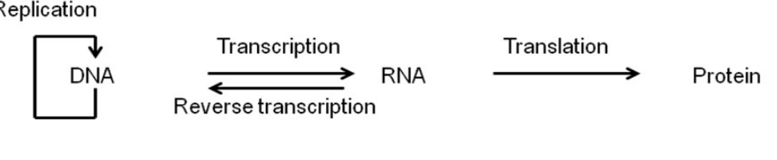
DNA forms daughter DNA molecules by replication. It also directs synthesis of proteins via RNA. The distance between two successive nucleotides in a DNA molecule is 3.4 nm. The average mass of one nucleotide is 330 Da and the average mass of one amino acid is 110 Da.
Now answer the following questions:
- i. What is the mass of a double stranded DNA molecule of length 34 cm? (1 mark)
- ii. How many bases it will have? (1 mark)
- iii. What will be the length of mRNA transcribed from the piece of DNA? (1 mark)
- iv. What will be the mass of the protein synthesized from this piece of DNA? (2 marks)
(Here assume that the entire DNA sequence is transcribed to RNA and then subsequently is translated to protein without loss of any sequence or nucleotide).
Total: 5 Marks
Topic: Biology Metodi: Physical Modeling Competenze: Mathematical Modeling Objects: — Fonte: Testo (PDF) — p.19
Il DNA è il materiale genetico negli organismi prokariotici ed eucariotici. Il flusso di informazioni genetiche è descritto come segue:
Quesito 64
Il DNA forma le molecole di DNA figlia attraverso la replicazione. Dirige anche la sintesi delle proteine attraverso l’RNA. La distanza tra due nucleotidi successivi in una molecola di DNA è di 3,4 nm. La massa media di un nucleotide è di 330 Da e la massa media di un aminoacido è di 110 Da.
Rispondi alle seguenti domande:
- i. Qual è la massa di una molecola di DNA a doppia stringa di 34 cm di lunghezza? *(1 marchio) *
- ii. Quante basi avrà? *(1 marchio) *
- III. Qual sarà la lunghezza dell’ARNm trascritto dal pezzo di DNA? *(1 marchio) *
- iv. Qual sarà la massa della proteina sintetizzata da questo pezzo di DNA? *(2 marchi) *
(Quindi supponiamo che l’intera sequenza di DNA sia trascritta all’RNA e successivamente trasmessa alla proteina senza perdita di alcuna sequenza o nucleotide).
Total: 5 Marks
Topic: Biology Metodi: Physical Modeling Competenze: Mathematical Modeling Objects: — Fonte: Testo (PDF) — p.19
Sunita was checking chemical properties of some compounds. During her experiments, she observed that when she heated an orange solid '', she obtained copious amounts of a green residue '', a colorless gas '' and some water vapour. She passed the dry gas '' over heated Mg, and obtained a white solid ''. When she tested the white solid '', she found that it reacted with water to give a pungent smelling gas '', which formed dense fumes with HCl. Can you identify the substances , , , , ? Give chemical reactions in support of your answer.
Total: 5 Marks
Topic: Chemistry Metodi: Physical Modeling Competenze: Physical Reasoning Objects: — Fonte: Testo (PDF) — p.19
Sunita stava verificando le proprietà chimiche di alcuni composti. Durante i suoi esperimenti, ha osservato che quando ha riscaldato un solido arancione , ha ottenuto grandi quantità di residui verdi , un gas incolore e un po’ di vapore d’acqua. Ha superato il gas secco "" su Mg riscaldato, ottenendo un solido bianco "". Quando ha testato il solido bianco , ha scoperto che reagisce con l’acqua per dare un gas pungente odore , che forma fumi densi con HCl. È possibile identificare le sostanze , , , , ? Date reazioni chimiche a supporto della vostra risposta.
Total: 5 Marks
Topic: Chemistry Metodi: Physical Modeling Competenze: Physical Reasoning Objects: — Fonte: Testo (PDF) — p.19
An image is constructed from an objective of focal length 1cm and an eyepiece of focal length 5 cm. An object is placed 1.5 cm form the objective. If the final image is a virtual image 25 cm from the eyepiece.
- i. Calculate the distance between the first image and the eyepiece.
- ii. Calculate maximum possible angular magnification.
- iii. Calculate the distance between the two lenses for this setting.
Least distance of distinct vision for unaided, normal human eye is 25 cm.
Total: 5 Marks
Topic: Geometric Optics Metodi: Thin Lens & Mirror Equation Competenze: Mathematical Modeling Objects: Lens Fonte: Testo (PDF) — p.19
Un’immagine è costruita da un obiettivo di 1 cm di focalità e da un occhio di 5 cm di focalità. Un oggetto è posizionato a 1,5 cm dall’obiettivo. Se l’immagine finale è un’immagine virtuale, a 25 cm dall’occhio.
- i. Calcolare la distanza tra la prima immagine e l’occhio.
- ii. Calcolare l’ingrandimento angolare massimo possibile.
- III. Calcolare la distanza tra le due lenti per questa impostazione.
La distanza minima di visione distinta per l’occhio umano normale non assistito è di 25 cm.
Total: 5 Marks
Topic: Geometric Optics Metodi: Thin Lens & Mirror Equation Competenze: Mathematical Modeling Objects: Lens Fonte: Testo (PDF) — p.19
The process through which a new species emerges in a population is called speciation. This process is one of the main sources for biological diversity. Evolutionary theories try to explain how new species originate & develop through divergence of gene pools. Study of fossil records can reveal the cumulative effects of speciation over vast tracts of time.
Biologically, a species can be defined as a population or a group of populations whose members have the potential to inbreed in nature & produce fertile & viable offspring but are unable to do so with members of other population. Thus, members of a biological species are united by being reproductively compatible at least potentially.
Two basic patterns of evolutionary changes can be noted.
-
Anagenesis or phyletic evolution: It is the accumulation of changes that gradually transform a given species into a species with different characters.
-
Cladogenesis or branching evolution: It includes splitting of a gene pool into two or more separate pools which further can give rise to one or more new species.
As biological species are distinguished based on reproductive incompatibility, the concept hinges on reproductive isolation – existence of biological factors that impede members of two species from producing viable, fertile hybrids. Sometimes, only one barrier may not block all genetic exchange between species, but a combination of factors can effectively isolate a species’ gene pool. These reproductive barriers can be classified into two main types, which are further classified into various sub types as given in the following table:
| Isolating Mechanisms | Description and Example/s |
|---|---|
| Pre-mating Mechanisms | |
| Habitat isolation | A species in the same locale may occupy different habitats. e.g. Pogostemon aquaticus is found in stagnated water bodies as well as marshlands |
| Temporal isolation | Species reproduce at different seasons e.g. Delonix regia (Gulmohar) or different times of day. |
| Behavioral isolation | Reproduction in a species is governed by specific patterns of behaviour. In animals, courtship behaviour differs or they respond to different songs e.g. several bird species, calls, pheromones e.g. ants or other signals. |
| Mechanical isolation | Physical barriers in reproductive organs/mechanisms in a species to prevent reproduction. e.g. Genetalia unsuitable for one another, Different diameters of stylar tube in some plant species |
| Post-mating Mechanisms | |
| Gamete isolation | Sperm cannot reach or fertilize egg. e.g. Rat-mouse gametes in In situ event reproduction |
| Zygote mortality | Fertilization occurs, but zygote does not survive e.g. In Santalum spp (Sandalwood) zygotes abort |
| Hybrid sterility | Hybrid survives but is sterile and cannot reproduce e.g. Male ligers (cross between Tiger and Lion) |
| F fitness | Hybrid is fertile but F hybrid has reduced fitness. e.g. In most of the hybrid varieties of garden flowers |
Studying this concept, answer the following questions:
- i. Which of the two basic patterns of evolutionary changes from those given above, do you think will promote biological diversity by increasing number of species?
- ii. Which of the following statements is/are incorrect?
- (a) Anagenesis is the only process which can give rise to formation of new species
- (b) Splitting of gene pool takes place only in cladogenesis.
- (c) Cladogenesis is the only process which can give rise to formation of new species.
- (d) Anagenesis as well as cladogenesis can give rise to formation of new species.
- iii. Write whether following statement is true or false. “Five species of frog (Rana spp.) in a particular region show the period of most active mating different for each species. This is an example of temporal isolation.”
- iv. Identify the type of reproductive barriers listed in the following examples.
- (a) Male fireflies are recognized by females of their species by patterns of their flashings.
- (b) In tropical rain forests, many animal species are restricted to a particular level of the forest canopy.
Total: 5 Marks
Topic: Biology Metodi: Physical Modeling Competenze: Physical Reasoning Objects: — Fonte: Testo (PDF) — p.20
Il processo attraverso il quale una nuova specie emerge in una popolazione si chiama speciazione. Questo processo è una delle principali fonti di diversità biologica. Le teorie dell’evoluzione cercano di spiegare come nuove specie si originano e si sviluppano attraverso la divergenza dei gruppi genetici. Lo studio delle registrazioni fossili può rivelare gli effetti cumulativi della speciazione su vaste fasi di tempo.
Biologicamente, una specie può essere definita come una popolazione o un gruppo di popolazioni i cui membri hanno il potenziale di incarnare nella natura e produrre discendenza fertile e viviabile, ma non sono in grado di farlo con membri di altre popolazioni. Pertanto, i membri di una specie biologica sono uniti essendo * riproduttivamente compatibili* almeno potenzialmente.
Si possono notare due modelli fondamentali di cambiamenti evolutivi.
-
Anagenesia o evoluzione filetica: è l’accumulo di cambiamenti che trasformano gradualmente una determinata specie in una specie con caratteri diversi.
-
Cladogeneesi o evoluzione ramificata: comprende la divisione di un pool di geni in due o più gruppi separati che possono dare luogo a una o più nuove specie.
Poiché le specie biologiche sono distinte in base all’incompatibilità riproduttiva, il concetto dipende dall’isolamento riproduttivo l’esistenza di fattori biologici che impediscono ai membri di due specie di produrre ibridi fertili e vivali. A volte, solo una barriera potrebbe non bloccare tutti gli scambi genetici tra le specie, ma una combinazione di fattori può isolare efficacemente il pool genetico di una specie. Tali barriere riproduttive possono essere classificate in due tipi principali, che sono ulteriormente classificati in vari sottotipi come indicato nella tabella seguente:
▸ I meccanismi di isolamento ▸ Descrizione e Esempi ▸ |---|---|
# # # # # # # # # # # # # # # # # # # # # # # # # # # # # # # # # # # # # # # # # # # # # # # # # # # # # # # # # # # # # # # # # # # # # # # # # # # # # # # # # # # # # # # # # # # # # # # # # # # # # # # # # # # # # # # # # # # # # # # # # # # # # # # # # # # # # # # # # # # # # # # # # # # # # # # # # # # # # # # # # # # # # # # # # # # # # # # # # # # # # # # # # # # # # # # # # # # # # # # # # # # # # # # # # # # # # # # # # # # # # # # # # # # # # # # # # # # # # # # # # # # # # # # # # # # # # # # # # # # # # # # # # # # # # # # # # # # # # # # # # # # # # # # # # # # # # # # # # # # # # # # # # # # # # # # # # # # # # # # # # # # # # # # # # # # # # # # # # # # # # # # # # # # # # # # # # # # # # # # # # # # # # # # # # # # # # # # # # # # # # # # # # # # # # # # # # # # # # # # # # # # # # # # # # # # # # # # # # # # # # # # # # # # # # # # # # # # # # # # # # # # # # # # # # # # # # # # # # # # # # # # # # # # # # # # # # # # # # # # # # # # # # # # # # # # # # # # # # # # # # # # # # # # # #
Un’esposizione nello stesso luogo può occupare habitat diversi. e.g. Il pugostemon aquaticus si trova in corpi idrici stagnati e nelle paludi. ♬ Isolamento temporale ♬ Specie si riproducono in diverse stagioni, ad esempio Delonix regia (Gulmohar) o in diversi orari della giornata. | Il comportamento isolato e la riproduzione in una specie sono disciplinati da specifici modelli di comportamento. Gli animali hanno un comportamento di corteggiamento diverso o rispondono a canzoni diverse, ad esempio: diverse specie di uccelli, chiodi, feromoni, ad esempio ants o altri segnali. | Il sistema di isolamento meccanico è un sistema di impedimento fisico degli organi/meccanismi riproduttivi di una specie. e.g. Genetalia non adatto l’uno all’altro, diversi diametri di tubo stilare in alcune specie di piante.
# # # # # # # # # # # # # # # # # # # # # # # # # # # # # # # # # # # # # # # # # # # # # # # # # # # # # # # # # # # # # # # # # # # # # # # # # # # # # # # # # # # # # # # # # # # # # # # # # # # # # # # # # # # # # # # # # # # # # # # # # # # # # # # # # # # # # # # # # # # # # # # # # # # # # # # # # # # # # # # # # # # # # # # # # # # # # # # # # # # # # # # # # # # # # # # # # # # # # # # # # # # # # # # # # # # # # # # # # # # # # # # # # # # # # # # # # # # # # # # # # # # # # # # # # # # # # # # # # # # # # # # # # # # # # # # # # # # # # # # # # # # # # # # # # # # # # # # # # # # # # # # # # # # # # # # # # # # # # # # # # # # # # # # # # # # # # # # # # # # # # # # # # # # # # # # # # # # # # # # # # # # # # # # # # # # # # # # # # # # # # # # # # # # # # # # # # # # # # # # # # # # # # # # # # # # # # # # # # # # # # # # # # # # # # # # # # # # # # # # # # # # # # # # # # # # # # # # # # # # # # # # # # # # # # # # # # # # # # # # # # # # # # # # # # # # # # # # # # # # # # # # # # # # # #
∙ ∙ ∙ ∙ ∙ ∙ ∙ ∙ ∙ ∙ ∙ ∙ ∙ ∙ ∙ ∙ ∙ ∙ ∙ ∙ ∙ ∙ ∙ ∙ ∙ e.g. Gametti di topo-ratto in riproduzione in situ
La mortalità zigota # # la fecondazione si verifica, ma la zigota non sopravvive, ad esempio. # In “Santalum spp” (Sandalwood) gli zygotti abortiscono.
∙∙ ∙ ∙ ∙ ∙ ∙ ∙ ∙ ∙ ∙ ∙ ∙ ∙ ∙ ∙ ∙ ∙ ∙ ∙ ∙ ∙ ∙ ∙ ∙ ∙ ∙ ∙ ∙ ∙ ∙ ∙ ∙ ∙ ∙ - I maschi di legger. Il F fitness Il ibrido è fertile ma l’ibrido F ha ridotto la fitness. e.g. Nella maggior parte delle varietà ibride di fiori di giardino.
Studiando questo concetto, rispondi alle seguenti domande:
- i. Quali dei due modelli fondamentali di cambiamenti evolutivi rispetto a quelli sopra indicati, secondo te, promuoveranno la diversità biologica aumentando il numero di specie?
- ii. Quali delle seguenti affermazioni sono/sono incorrecte?
- (a) L’anagenesi è l’unico processo che può dare luogo alla formazione di nuove specie
- (b) La divisione del patrimonio genetico avviene solo nella cladogenesi.
- c) La cladogeneesi è l’unico processo che può dare luogo alla formazione di nuove specie.
- (d) L’anagenesi e la cladogenesi possono dare luogo alla formazione di nuove specie.
- III. Scrivi se la seguente affermazione è vera o falsa. “Quattro specie di rana (Rana spp.) in una determinata regione mostrano un periodo di accoppiamento più attivo diverso per ciascuna specie. Questo è un esempio di isolamento temporale”.
- iv. Identificare il tipo di barriere riproduttive elencate nei seguenti esempi.
- (a) I maschi di luci di fuoco sono riconosciuti dalle femmine della loro specie per i loro lampeggi.
- b) Nelle foreste tropicali, molte specie animali sono limitate a un determinato livello del dosaggio forestale.
Total: 5 Marks
Topic: Biology Metodi: Physical Modeling Competenze: Physical Reasoning Objects: — Fonte: Testo (PDF) — p.20
Prove that there are infinitely many perfect squares ending in 444.
Total: 5 Marks
Topic: Mathematics Metodi: Physical Modeling Competenze: Mathematical Modeling Objects: — Fonte: Testo (PDF) — p.21
Prova che ci sono infiniti quadrati perfetti che finiscono in 444.
Total: 5 Marks
Topic: Mathematics Metodi: Physical Modeling Competenze: Mathematical Modeling Objects: — Fonte: Testo (PDF) — p.21